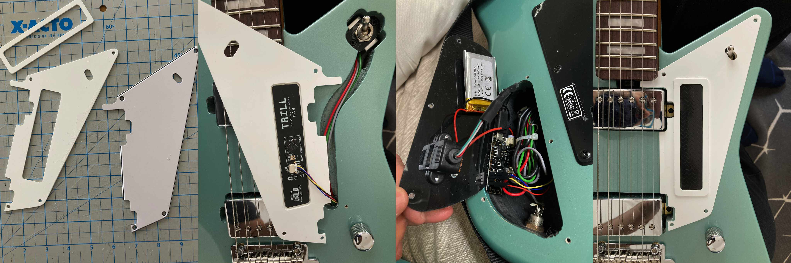

Augmented Guitar
My take on the old theme of augmenting electric guitars with electronics
|  |
| Building process steps |
The Augmented Guitar project represents my exploration of the classic theme of enhancing electric guitars with electronic components and sensors. I initially started this work in 2010, but I've built a couple of iterations, the latest in 2024 around a Sterling Mariposa guitar. My goal is to investigate how traditional guitar playing can be extended through the integration of motion sensors, accelerometers, and other electronic interfaces.
The project focuses on creating new expressive possibilities for guitarists by capturing physical gestures and movements that normally wouldn't affect the sound. By augmenting the instrument with electronic sensors, the guitar becomes capable of responding to tilt, rotation, and other spatial movements, opening up new dimensions of musical expression.
This early exploration in the field of augmented musical instruments demonstrates a DIY approach to instrument modification, showcasing how creative applications of readily available electronics can transform traditional instruments. The work contributes to the ongoing dialogue about the relationship between acoustic and electronic musical expression.
The project focuses on creating new expressive possibilities for guitarists by capturing physical gestures and movements that normally wouldn't affect the sound. By augmenting the instrument with electronic sensors, the guitar becomes capable of responding to tilt, rotation, and other spatial movements, opening up new dimensions of musical expression.
This early exploration in the field of augmented musical instruments demonstrates a DIY approach to instrument modification, showcasing how creative applications of readily available electronics can transform traditional instruments. The work contributes to the ongoing dialogue about the relationship between acoustic and electronic musical expression.
 |
| Earlier version (2010) |